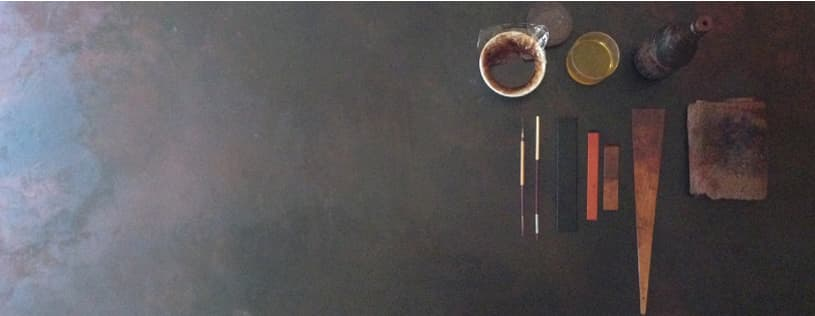
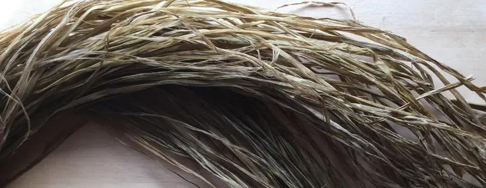
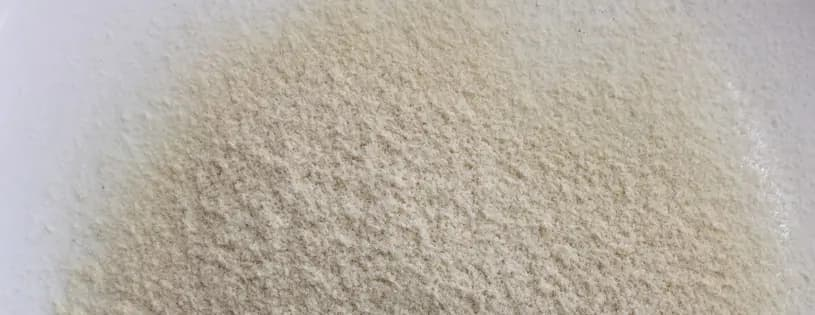
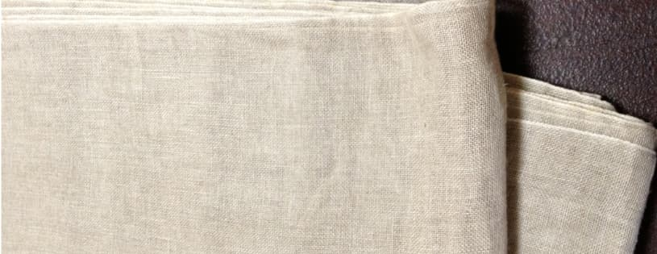
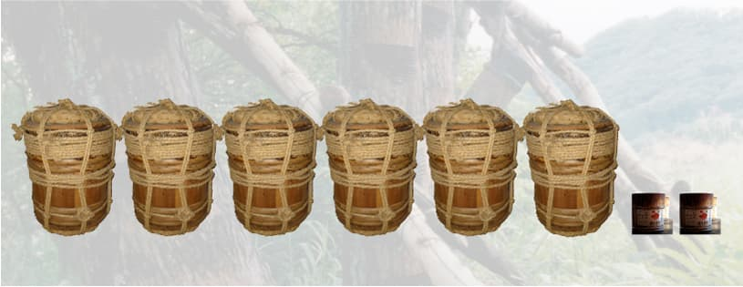
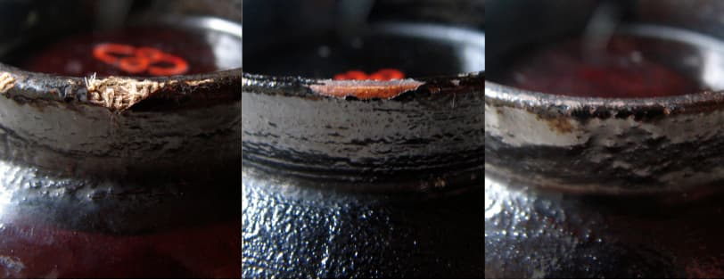
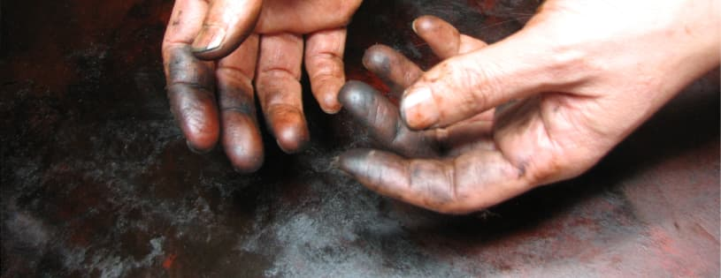
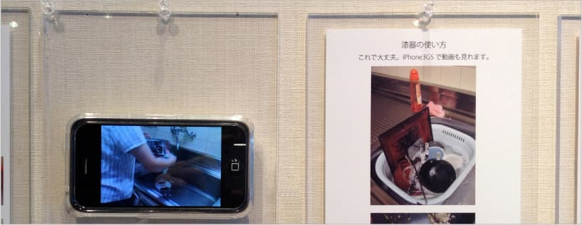
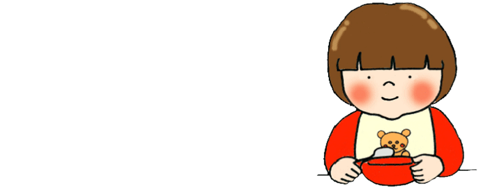

- Since1987
- / 日本語


These bowls are made using a technique that uses annual hemp to make the womb, rather than wood, which takes many years to grow.
Arasowan. 124 mm diameter, 64 mm height, Joboji lacquer. Hemp. Oyama district, Hita City, Oita Prefecture.

Hemp has been used for about 10,000 years. It is unraveled to extract the fibers, which are then made into yarn and cloth.
Japan's Cannabis Control Law defines cannabis as "Cannabis sativa L. and its products, except for the mature stems of Cannabis sativa and its products (excluding resin) and the seeds of Cannabis sativa and its products." (Article 1 of the same law).
The Oyama district of Hita City, Oita Prefecture, was designated as a preservation technique selected by the Agency for Cultural Affairs and was specially cultivated.

Powdered hemp stem, the core remaining after the skin is removed from the stem.

In addition to hemp, there are other types of hemp known as flax (linen), ramie (ramie), yellow hemp (jute), Manila hemp, and sisal hemp. What is currently marketed as hemp does not include hemp.

The amount of Joboji urushi that was used to until now. It is the amount I used alone without any disciples.
2024: As of January 270.00kg. Amount used 266.25kg.
In 2020, the Joboji lacquer collected technique was designated as a World Intangible Heritage. I have been using only Joboji lacquer since 2000.

The difference of the Urushi bowl when we used it in the same way.
In case of the Wajimajinoko Urushi technique hemp cloth comes out and came to soak up water and a urushi peels off. （left）
In case of the non-cloth Urushi bowl wood is in sight in around 1 year. （center）
In case of making with the artist origin Urushi technique even if I had used as usual for about 6 years wood base wasn't in sight.（right）
Kyoto Yamashina Tonoko powder do not use because I had experienced water sharpening and melting in school days.

Make works by hand, paint it, I complete it using various techniques.

How to handle my urushir ware. Try to see videos at the venue .

Bowl that can use all the time from baby.
Bowl of the person who is good at cleaning up.
There are various kinds of bowls because of the difference in tailoring.
Even now I am keeping it unchanged with the price setting in 1995.